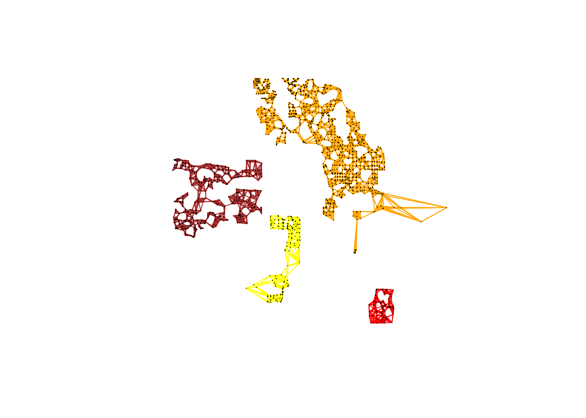
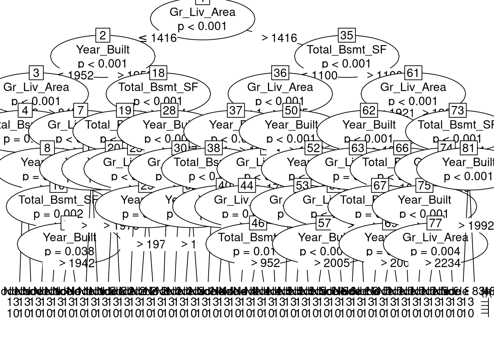

library(sf)Linking to GEOS 3.12.1, GDAL 3.9.0, PROJ 9.4.0; sf_use_s2() is TRUEdata("ames", package = "modeldata")
ames_sf <- st_as_sf(ames, coords = c("Longitude", "Latitude"), crs = "OGC:CRS84")library(sf)Linking to GEOS 3.12.1, GDAL 3.9.0, PROJ 9.4.0; sf_use_s2() is TRUEdata("ames", package = "modeldata")
ames_sf <- st_as_sf(ames, coords = c("Longitude", "Latitude"), crs = "OGC:CRS84")library(mapview)
mapview(ames_sf)
f <- log(Sale_Price) ~ Total_Bsmt_SF + Gr_Liv_Area + Year_Built
lm_mod <- lm(f, data=ames_sf)
summary(lm_mod)
Call:
lm(formula = f, data = ames_sf)
Residuals:
Min 1Q Median 3Q Max
-3.02037 -0.08524 0.01052 0.10545 0.67890
Coefficients:
Estimate Std. Error t value Pr(>|t|)
(Intercept) 6.477e-01 2.710e-01 2.39 0.0169 *
Total_Bsmt_SF 2.268e-04 1.038e-05 21.84 <2e-16 ***
Gr_Liv_Area 3.957e-04 8.523e-06 46.42 <2e-16 ***
Year_Built 5.347e-03 1.397e-04 38.27 <2e-16 ***
---
Signif. codes: 0 '***' 0.001 '**' 0.01 '*' 0.05 '.' 0.1 ' ' 1
Residual standard error: 0.2082 on 2926 degrees of freedom
Multiple R-squared: 0.7392, Adjusted R-squared: 0.739
F-statistic: 2765 on 3 and 2926 DF, p-value: < 2.2e-16library(spdep)Loading required package: spDataknn10 <- knn2nb(knearneigh(ames_sf, k=10), sym=FALSE)
knn10Neighbour list object:
Number of regions: 2930
Number of nonzero links: 29300
Percentage nonzero weights: 0.3412969
Average number of links: 10
4 disjoint connected subgraphs
Non-symmetric neighbours listn_comp <- n.comp.nb(knn10)
str(n_comp)List of 2
$ nc : int 4
$ comp.id: int [1:2930] 1 1 1 1 1 1 1 1 1 1 ...table(n_comp$comp.id)
1 2 3 4
1763 803 213 151 plot(st_geometry(ames_sf), type="n")
plot(subset(knn10, n_comp$comp.id == 1), st_geometry(ames_sf)[n_comp$comp.id == 1], col="orange", pch=".", add=TRUE)
plot(subset(knn10, n_comp$comp.id == 2), st_geometry(ames_sf)[n_comp$comp.id == 2], col="brown", pch=".", add=TRUE)
plot(subset(knn10, n_comp$comp.id == 3), st_geometry(ames_sf)[n_comp$comp.id == 3], col="yellow", pch=".", add=TRUE)
plot(subset(knn10, n_comp$comp.id == 4), st_geometry(ames_sf)[n_comp$comp.id == 4], col="red", pch=".", add=TRUE)
ames_knn10 <- nb2lines(knn10, coords=st_geometry(ames_sf))
mapview(ames_sf) + mapview(ames_knn10)
lw <- nb2listw(knn10)
lm.morantest(lm_mod, lw)
Global Moran I for regression residuals
data:
model: lm(formula = f, data = ames_sf)
weights: lw
Moran I statistic standard deviate = 33.57, p-value < 2.2e-16
alternative hypothesis: greater
sample estimates:
Observed Moran I Expectation Variance
0.2599248425 -0.0008605434 0.0000603483 summary(lm.RStests(lm_mod, lw, test="all")) Rao's score (a.k.a Lagrange multiplier) diagnostics for spatial
dependence
data:
model: lm(formula = f, data = ames_sf)
test weights: lw
statistic parameter p.value
RSerr 1107.60 1 < 2.2e-16 ***
RSlag 1162.93 1 < 2.2e-16 ***
adjRSerr 324.65 1 < 2.2e-16 ***
adjRSlag 379.99 1 < 2.2e-16 ***
SARMA 1487.59 2 < 2.2e-16 ***
---
Signif. codes: 0 '***' 0.001 '**' 0.01 '*' 0.05 '.' 0.1 ' ' 1library(spatialreg)Loading required package: Matrix
Attaching package: 'spatialreg'The following objects are masked from 'package:spdep':
get.ClusterOption, get.coresOption, get.mcOption,
get.VerboseOption, get.ZeroPolicyOption, set.ClusterOption,
set.coresOption, set.mcOption, set.VerboseOption,
set.ZeroPolicyOptionlibrary(lagsarlmtree)Loading required package: partykitLoading required package: gridLoading required package: libcoinLoading required package: mvtnormslm_tree <- lagsarlmtree(f, data=ames_sf, listw=nb2listw(knn10, style="W"), method="LU")plot(slm_tree)
sem <- errorsarlm(f, data=ames_sf, listw=lw, method="LU")
summary(sem, Hausman=TRUE)
Call:errorsarlm(formula = f, data = ames_sf, listw = lw, method = "LU")
Residuals:
Min 1Q Median 3Q Max
-2.0846658 -0.0708666 0.0097527 0.0896922 0.7432273
Type: error
Coefficients: (asymptotic standard errors)
Estimate Std. Error z value Pr(>|z|)
(Intercept) 2.6041e+00 5.0699e-01 5.1363 2.801e-07
Total_Bsmt_SF 1.5861e-04 9.7989e-06 16.1862 < 2.2e-16
Gr_Liv_Area 3.1553e-04 8.6975e-06 36.2781 < 2.2e-16
Year_Built 4.4547e-03 2.5789e-04 17.2735 < 2.2e-16
Lambda: 0.72557, LR test value: 732.53, p-value: < 2.22e-16
Approximate (numerical Hessian) standard error: 0.019047
z-value: 38.093, p-value: < 2.22e-16
Wald statistic: 1451.1, p-value: < 2.22e-16
Log likelihood: 808.0433 for error model
ML residual variance (sigma squared): 0.031452, (sigma: 0.17735)
Number of observations: 2930
Number of parameters estimated: 6
AIC: -1604.1, (AIC for lm: -873.56)
Hausman test: 95.74, df: 4, p-value: < 2.22e-16sem_1 <- errorsarlm(f, data=ames_sf[n_comp$comp.id == 1,], listw=nb2listw(subset(knn10, n_comp$comp.id == 1), style="W"), method="LU")
summary(sem_1, Hausman=TRUE)
Call:errorsarlm(formula = f, data = ames_sf[n_comp$comp.id == 1, ],
listw = nb2listw(subset(knn10, n_comp$comp.id == 1), style = "W"),
method = "LU")
Residuals:
Min 1Q Median 3Q Max
-1.914459 -0.067958 0.013055 0.093400 0.571573
Type: error
Coefficients: (asymptotic standard errors)
Estimate Std. Error z value Pr(>|z|)
(Intercept) 1.4089e+00 5.6752e-01 2.4826 0.01304
Total_Bsmt_SF 2.1064e-04 1.3498e-05 15.6047 < 2e-16
Gr_Liv_Area 3.6890e-04 1.1192e-05 32.9609 < 2e-16
Year_Built 4.9955e-03 2.8958e-04 17.2509 < 2e-16
Lambda: 0.63335, LR test value: 215.59, p-value: < 2.22e-16
Approximate (numerical Hessian) standard error: 0.035704
z-value: 17.739, p-value: < 2.22e-16
Wald statistic: 314.66, p-value: < 2.22e-16
Log likelihood: 534.6098 for error model
ML residual variance (sigma squared): 0.03042, (sigma: 0.17441)
Number of observations: 1763
Number of parameters estimated: 6
AIC: -1057.2, (AIC for lm: -843.63)
Hausman test: 76.741, df: 4, p-value: 8.8818e-16preds <- predict(sem_1, newdata=ames_sf, listw=lw)Warning in predict.Sarlm(sem_1, newdata = ames_sf, listw = lw): some region.id
are both in data and newdatasqrt(mean((log(ames_sf$Sale_Price[n_comp$comp.id == 1]) - preds[n_comp$comp.id == 1])^2))[1] 0.1980519sqrt(mean((log(ames_sf$Sale_Price[n_comp$comp.id != 1]) - preds[n_comp$comp.id != 1])^2))[1] 0.2262082